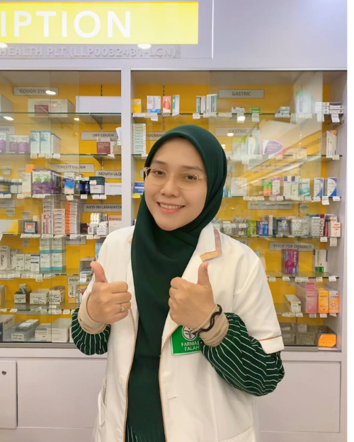

Gold Innovation Award Technology
Our Story
Built from a Pharmacist's
Own Struggle
1
11+ years as a Professional Pharmacist
B. Pharmacy from University of Malaya. Worked across government hospitals, clinics & community pharmacies.
2
4 years of postpartum hair loss — with no real answer
Even as a pharmacist, nothing worked. That frustration pushed her deeper into hair science and trichology.
3
Discovered FiberHance™ bond-building technology
After studying Trichology, she found that true hair recovery starts from within — at the cortex level, not just the surface.
97% satisfaction in pilot study with 300 participants
Developed with a doctor & chemist. Validated before launch. Today trusted by thousands across Malaysia.
"I was a pharmacist who couldn't solve my own hair loss. That experience is what pushed me to find something that actually works — and share it with everyone facing the same struggle."
— NISRAA Founder, Pharmacist & Trichology Practitioner